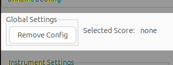
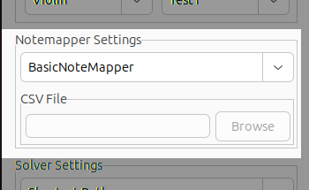
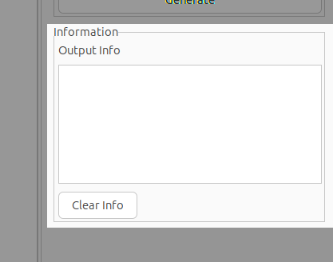

GUI Guide
This is a short guide on what the different components in the GUI do.
Overview
Here is a full view of the MFPG Gui.

Top Menu

The top menu has 3 submenus:
File
The file menu is used for selecting the target score. Currently this can only be done by locally storing the score and importing it directly to the program.
Help
The help menu provides direction to helpful resources such as guides and tutorials.
Configs
The configs menu allows for saving, loading, deleting, and creating new configs. The program uses a hidden file called .mfpg_configs.xml to store configs in XML format. If no such file is found these options will be disabled.
Config Selector

The config selector selects between currently imported configurations. This is not the same as the configs submenu in the previous section, as it does not save nor load configs from a file but instead temporarily stores configs until program exit.
Global Settings

This section is for selections which do not depend on configurations. The Remove Config button deletes the temporary current config, but does not delete it from the permanent storage in the config storage file. The selected score label shows which score is currently selected.
Instrument Settings
Here we determine the instrument specifications. This can be done by using presets or by loading the instrument and actionset from a DSL (domain specific language) file. The presets are hardcoded values and currently there are not many presets available. Therefore it is recommended to use the DSL (for information on how to do this, see the DSL guide.) for most purposes currently. This is done by importing a .mfpg DSL file into the program using the DSL file selector.
Only the violin is available as an instrument preset so far, while the actionset presets are simple actionsets primarily used for testing. The implementation of these actionsets can be found in the GitHub repo in the src/configs.h file.
Notemapper Settings

The notemapper selection is limited to the hardcoded basic notemapper, which has the three basic attributes mapped (Finger, String, and Hand Position) for a standard violin. The CSV Notemapper option requires importing a CSV file. This CSV file can either be a premade one (the GitHub repo has a standard CSV notemap file which contains a few different attributes.), or constructed using the CSV file constructor, although the second option requires some work as well as some programming (see the CSV Builder guide for more information regarding this approach).
Solver Settings

The solver section is more focused on output accuracy and efficiency. The Shortest Path solver gives an accurate output based on the entire score. The greedy solver selects the easiest path based on the easiest next step. This means that the shortest path solver is the solver that should be used unless there is a specific reason to use the greedy solver.
The checkboxes are efficiency optimizations to the shortest path solver allow for faster solutions. This will in general not be a problem since the solver will often times be fast enough without these optimizations, but for some extreme cases they might improve performance noticably. In the future, multiple fingerings might be generated to give the user a set of fingerings to choose from rather than the current method of selecting the 'optimal' solution only. When this is implemented these optimizations might need to be disabled to allow for multiple solutions.
Files Area
The middle section of the GUI is for selected DSL and CSV Notemapper file, as well as the output. These are accessed via the tabs at the top. Once a file is selected via the file selectors in other sections they can be modified and saved in the file window. The program operates on the saved files, so making changes to the DSL file in the file window does not change the output of the program unless the file is saved first. The file windows are as follows:
Output
This is where the output file is shown, if no output file is selected the results are shown here anyway, but are not saved to any file.
Notemapper
Here the selected CSV Notemapper file is shown if the CSV Notemapper is used.
DSL
Here the selected DSL file is shown, and where it can be modified directly. In future versions there will be built-in highlighting and typechecking available here.
Output Area

The Output section allows configuring output. The output can either be in CSV format, where the output will be split into columns for each attribute in the actionset (as well as a few other columns), or in a basic format where the output is more verbose. The output can also be directed to a file if desired.
Generation Area

The 'Generate' button runs the program with the current settings.
Information Area

The information area shows output information that is related to program execution rather than the generated fingering position output. This could be things like program errors or logging information. The clear info clears the output info area.